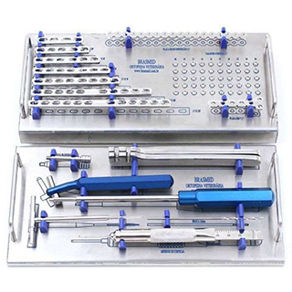
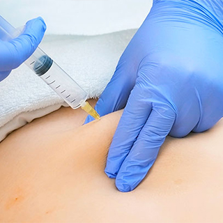

Home
Servicios
Doctores
Contacto
Bienvenido al portal de Medicardon C.A.
Somos una clinica con multiples servicios en el corazón de la ciudad de Punto Fijo , Estado Falcón
Consultas médicas

Insumos e instrumental

Ozonoterapia
Estética